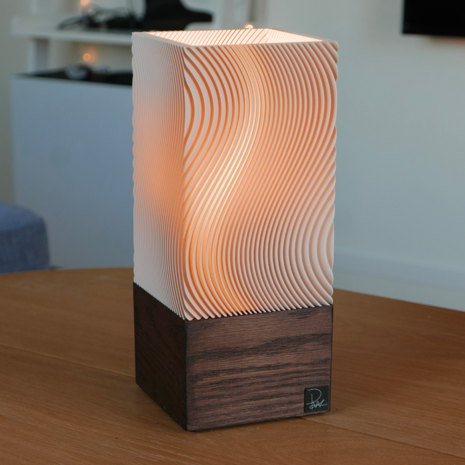
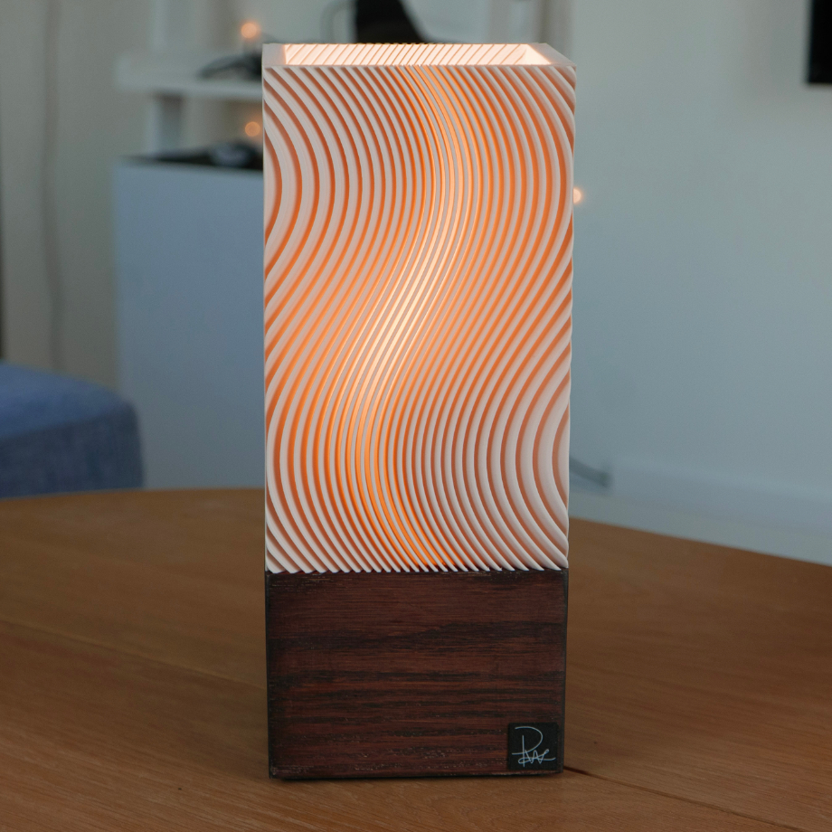
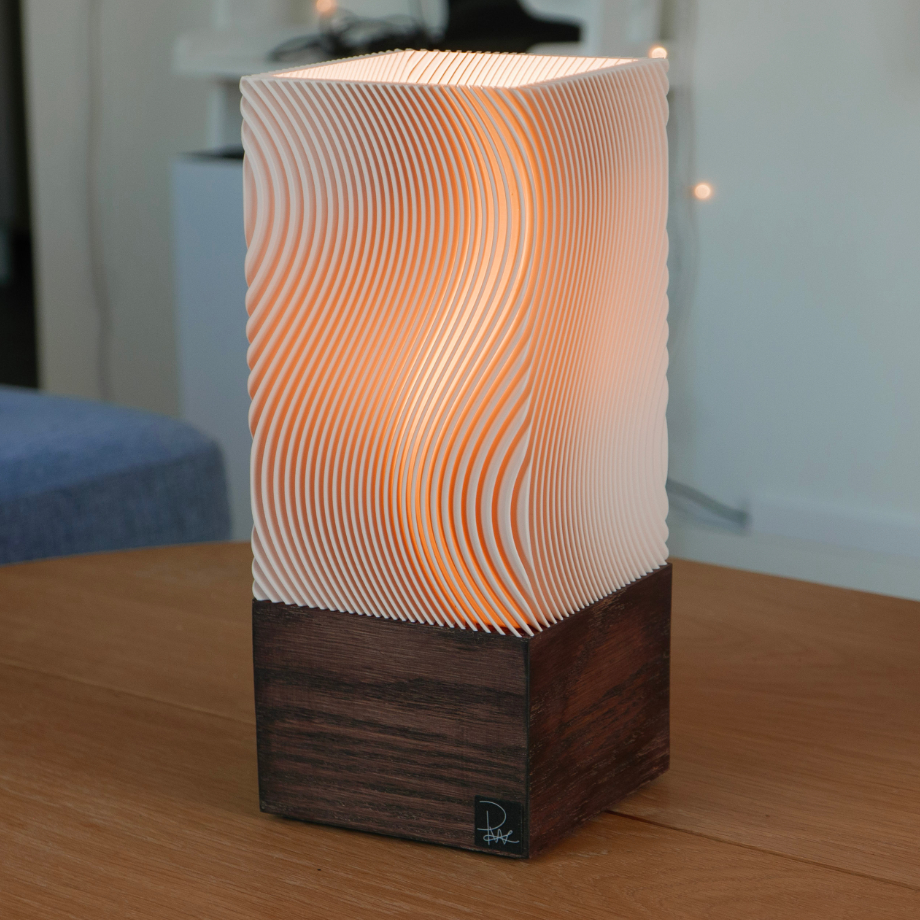
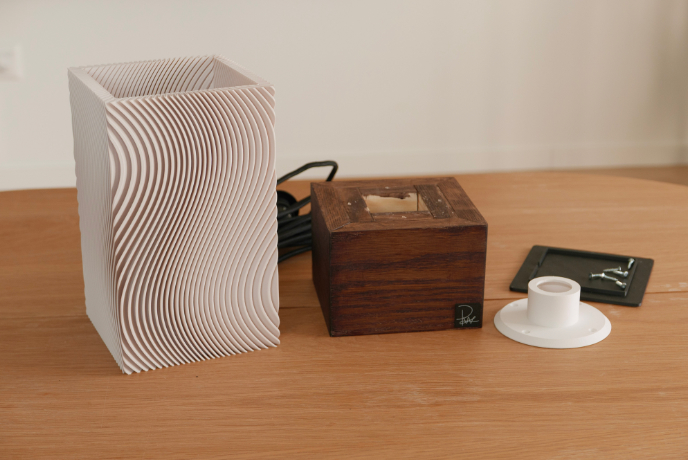
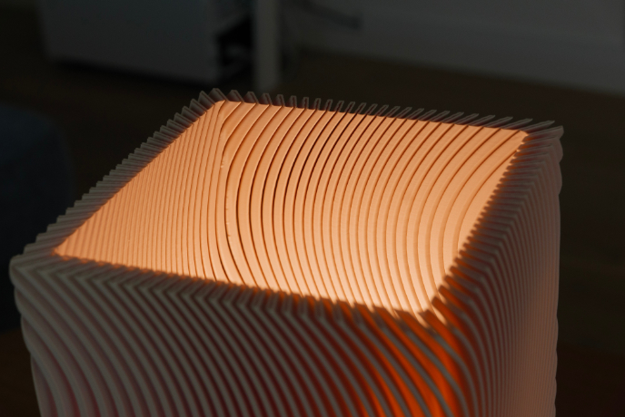

Fick inspiration av någon vas i liknande design så tänkte göra de till en lampa
Inte så jättespeciell men lyser lite coolt iallafall




Gjorde en bas precis likadant som Snurrande Lampa
Sen var det mer eller mindre bara att sätta ihop alla delarna

Borde kanske lagt lite mer tid på att göra designen lätt att skriva ut
Blev nämligen typ 4 gånger tyngre än de andra lampskärmarna jag gjort och tog 4 gånger så lång tid att skriva ut
Men men, man lär sig till nästa gång